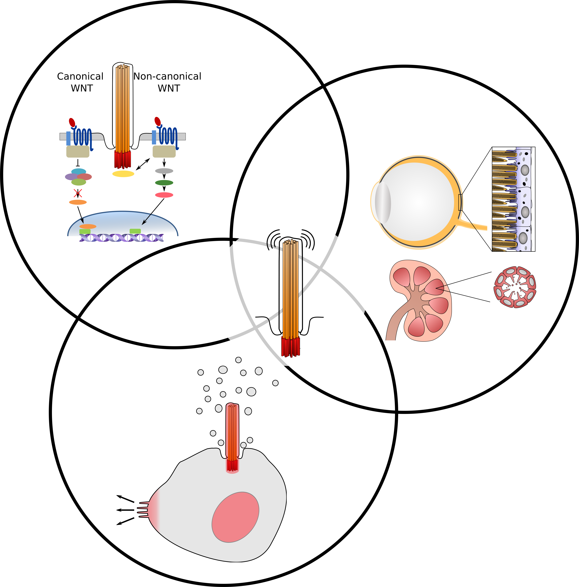

In recent years, primary cilia have emerged as unique and multifunctional organelles as well as having been implicated in a variety of cellular and developmental processes. Primary cilia are components of virtually all vertebrate cell types, which explains why primary cilia defects cause a spectrum of clinical phenotypes. Many human diseases have been associated with primary cilia dysfunction, collectively termed 'ciliopathies'. Bardet-Biedl syndrome (BBS) is one of the first human syndromes to be identified as being caused by primary cilia dysfunction. One of the hallmark symptoms of BBS and other ciliopathies is retinal degeneration. Till now, elucidation of disease mechanisms have focused on trafficking across the photoreceptor connecting cilium, which corresponds to the transition zone of a modified primary cilium; however, defects in other ciliated cell types in the eye may also be contributing to disease manifestation.
One of the first signaling pathways shown to be associated with the primary cilium is the wingless (Wnt) signaling pathway, which is known to regulate diverse processes during development, including cell fate, structural remodeling and cell polarity. Wnt signaling has been shown to be crucial for the development and function of the retinal pigment epithelium (RPE), a monolayer epithelium tightly associated with photoreceptors and critical for photoreceptor function and survival. Despite the well known close association of these two cell types, the potential contribution of RPE disruption to retinal degeneration has not, to date, been extensively considered. Concomitantly, studies into the ciliary regulation of Wnt signaling are predominantly restricted to in vitro based model systems with limited understanding in mammalian systems.
To decipher the association between ciliary function and WNT signaling.
To identify ocular and renal ciliary disease mechanisms and therapeutic opportunities.
To identify alternative roles of ciliary proteins.
Our Team
Helen May-Simera, PhDPrincipal Investigator
Dr Helen May-Simera was born in Great Britain in 1981 and studied biochemistry at the University of Bath. After completing her Master's degree in 2003 she was a doctoral student at University College London, where she obtained her doctorate in 2008. She then moved to the USA to conduct research as a postdoc at the National Institute of Health in Bethesda, initially at the National Institute on Deafness and Communication Disorders, and then later at the National Eye Institute. In 2014 she was awarded the Sofia Kovalevskaja award, allowing her to continuing her research at the University of Mainz as a young group leader.
Viola Kretschmer, PhD Lab Manager & Head of Visual Assessment Unit
Lena Brücker PhD Student
Ann-Kathrin Volz PhD Student
Alexander Ewerling PhD Student
Dominik Reichert Masters Student
Peter Matthiessen Masters Student
Alina Frei Masters Student
Stefanie Kornelia Becker Masters Student
Rike HähnelBachelor Student
Alumni
Sarita Patnaik
Sandra Schneider
Jana Kurpinski
Tommy Sroka
Aalaa Farag
Sophie Schroeder
Emilia Kieckhöfer
Join Us
To apply, please send a cover letter, curriculum vitae, list of publications, contact information of three references and a personal statement describing research experience, current interests, and future goals to hmaysime@uni-mainz.de
Student Research Assistant (HiWi)
Master, Bachelor and Rotation Students
Don't see a position for you? Please please send us a message we are always looking for talented people.
Media
Links
Affiliated Research Consortia: SPP2127Querverbindungen für Querdenkende: Exzellente Lehre für engagierte Studierende
Vision Research: The Research of Helen May-Simera
Cilia 2020


Publications Out Of Our Lab
- Tissue-dependent differences in Bardet-Biedl syndrome gene expression. 2020 Biol Cell 112(2):39-52.
- The Role of WNT Signaling During Ciliary-Dependent RPE Development 2020 Klin Monbl Augenheilkd 237(3):248-258.
- Progressive characterization of visual phenotype in Bardet-Biedl Syndrome mutant mice. 2019 IOVS 1;60(4):1132-1143
- Bardet-Biedl Syndrome proteins regulate cilia disassembly during tissue maturation. 2018 Cell Mol Life Sci. 76(4):757-775
- Generation of an inducible RPE-specific Cre transgenic-mouse line. 2018 PLoS One. 15;13(11):e0207222
- Primary Cilium Mediated Retinal Pigment Epithelium Maturation is Retarded in Ciliopathy Patient Cells. 2018 Cell Rep. Jan 2;22(1):189-205.
- Cilia - The sensory antennae in the eye. 2017 Prog. Retin. Eye Res. 60:144-180
- Loss of Macf1 abolishes ciliogenesis and disrupts apicobasal polarity establishment in the retina. 2016 Cell Reports. 17(5):1399-1413
- Evaluation of Planar-Cell-Polarity Phenotypes in Ciliopathy Mouse Mutant Cochlea. 2016 J Vis Exp. 21;(108)
- Ciliary proteins Bbs8 and Ift20 regulate planar cell polarity in the cochlea 2014 Development. 1;142(3):555-66